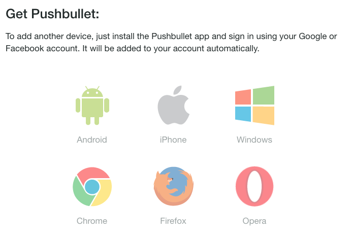

欢迎来到 Animal-Courier


这只是一个脚本并行控制程序。适用于什么样的情况呢？举两个例子：
- 本地运行耗时较长，资源消耗一般，但数量较多的情况
这就好比，我想在本地运行
bwa来进行比对，而我已知bwa比对可能用到的资源大概是本机的五分之一，所以我觉得我可以并行，而且并行4个是肯定没有问题。但是 我又有50个样本需要跑，当然就比较希望能够同时跑4个，直到50个样本都比对完。（一般脚本需要用for一个一个跑，就是同时只能跑一个；或者全部用nohup投递到 后台，但同时跑50个机器又受不了）
- 想要大概估计一下某些脚本的资源消耗（目前只支持RSS）
比如，RNA-seq数据比对有那么多软件，那么哪种比较适合自己的机器运行（考虑的因素应该很多，但是现在只是想看看她们的运行时间及内存消耗情况，看看哪种更 适合），就可以适用本程序的
--profile来进行统计，同时给出可视化结果，方便查看。
安装
Conda(推荐)
由于conda的dep问题，所以在安装的时候，还需要在相同环境下使用pip install apprise安装apprise。
pip install apprise
conda install -r btrspg animal-courier
手动安装
wget https://github.com/dota2-BioTools/Animal-Courier/archive/v0.1.4.alpha.tar.gz
tar -zxvf v0.1.4.alpha.tar.gz
cd v0.1.4.alpha
python setup.py install
or install the development
pip install git+https://github.com/dota2-BioTools/Animal-Courier.git
使用方法
multi_run.py -h
optional arguments:
-h, --help show this help message and exit
--shell SHELL shell scripts (default: None)
--thread THREAD thread number (default: 4)
--work-name WORK_NAME
logs name prefix (default: work)
--profile If run profile for command(only RSS) (default: False)
--interval INTERVAL If profile set True, please set interval(seconds) of
the memory stats (default: 10)
shell
想要进行并行运行的脚本，一行一个完整脚本，具体例子如下：
#bwa mem test1.1.fq.gz test1.2.fq.gz reference.fasta | samtools view -bSt reference.fasta.fai -o test1.bam
# this one would not be identify as a complete command. It would not run.
bwa mem test1.1.fq.gz test1.2.fq.gz reference.fasta | samtools view -bSt reference.fasta.fai -o test1.bam
bwa mem test2.1.fq.gz test2.2.fq.gz reference.fasta | samtools view -bSt reference.fasta.fai -o test2.bam
bwa mem test3.1.fq.gz test3.2.fq.gz reference.fasta | samtools view -bSt reference.fasta.fai -o test3.bam
-
注释的不会当作命令
- 假设需要运行多个步骤的，推荐适用
;进行连接
bwa mem test1.1.fq.gz test1.2.fq.gz reference.fasta | samtools view -bSt reference.fasta.fai -o test1.bam;samtools index test1.bam
thread
同时运行任务数目，默认为4个。
work-name
每行命令都会重新分割成单独的shell脚本，这个脚本会以work-name为前缀，并且整个脚本完整log也会以work-name为前缀。默认：work
例如上面例子中的test.sh就会被拆分为如下几个脚本：
- work.0001.sh
#! /bin/bash
bwa mem test1.1.fq.gz test1.2.fq.gz reference.fasta | samtools view -bSt reference.fasta.fai -o test1.bam
- work.0002.sh
#! /bin/bash
bwa mem test2.1.fq.gz test2.2.fq.gz reference.fasta | samtools view -bSt reference.fasta.fai -o test2.bam
- work.0003.sh
#! /bin/bash
bwa mem test3.1.fq.gz test3.2.fq.gz reference.fasta | samtools view -bSt reference.fasta.fai -o test3.bam
profile
是否需要进行内存统计，默认不进行统计。
interval
内存统计间隔时间，如果开启profile参数，则默认时间间隔为10秒。根据运行脚本合理设置间隔时间。
notification
是否开启提醒，目前只支持pushBullet，如果需要开启提醒，则需要提供pushBullet的token。
为了安全，故不显示要求输入token，采用环境变量的形式提供。在~/.bashrc中增加
export pushBullet_token='{token}'
或者每次运行前使用该命令提供token
pushBullet支持的设备也很多，如下图所示：

可以安装浏览器插件，或者手机软件，这样后台运行的任务也能收到运行完成通知。
例子
- test.sh
perl -e 'for($i=0;$i<200000;$i++){$hash{$i}=$i;}'
perl -e 'for($i=0;$i<2000000;$i++){$hash{$i}=$i;}'
perl -e 'for($i=0;$i<20000000;$i++){$hash{$i}=$i;}'
multi_run.py --shell test.sh --thread 4 --profile --interval 1
结果
- standard out
2019-01-12 00:01:46,004 multi_run.py [INFO] Get command args, and args are :test.sh
2019-01-12 00:01:46,343 psopen.py [INFO] now workon 437972:work0002...
2019-01-12 00:01:46,343 psopen.py [INFO] now workon 437970:work0001...
2019-01-12 00:01:46,343 psopen.py [INFO] now workon 437971:work0003...
2019-01-12 00:02:02,711 psopen.py [INFO] finished 437972:work0002...
2019-01-12 00:02:02,736 psopen.py [INFO] finished 437970:work0001...
2019-01-12 00:02:21,234 psopen.py [INFO] finished 437971:work0003...
2019-01-12 00:02:21,291 multi_run.py [INFO] Stats time of work
2019-01-12 00:02:21,296 multi_run.py [INFO] Stats profiles
2019-01-12 00:02:26,182 multi_run.py [INFO] ALL FINISHED!!
============================================================
Time(mins) Work Profile
0 0.27 work0001 ./log.work.20190112000145/work0001//work0001.4...
1 0.27 work0002 ./log.work.20190112000145/work0002//work0002.4...
2 0.58 work0003 ./log.work.20190112000145/work0003//work0003.4...
============================================================
count 3.000000
mean 0.373333
std 0.178979
min 0.270000
25% 0.270000
50% 0.270000
75% 0.425000
max 0.580000
- 最终生成的log的目录结构

- 开启
profile参数后，进行的内存统计结果（点击图片可交互）